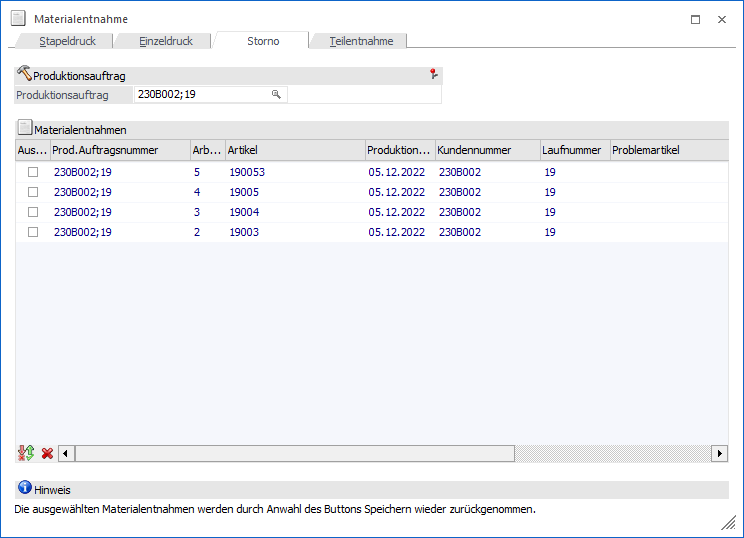
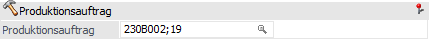
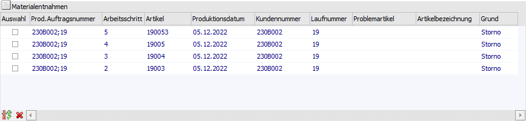
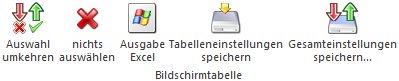
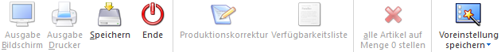

In dem Register "Storno" der Materialentnahme können Materialentnahmescheine, welche bereits als Original gedruckt wurden(!), storniert werden. Der Storno bewirkt, dass…
ü die getätigten Lagerabbuchungen wieder storniert werden.
ü das Kennzeichen des getätigten Originaldrucks wieder entfernt wird.
Hinweis
Das Register "Storno" ist nur anwählbar, wenn in den PPS-Parametern (Bereich "Buchungsschlüssel") die Option "Materialentnahmeschein - Lagerabbuchung" aktiviert wurde.

Folgende Eingabefelder, Einstellungen und Informationen stehen zur Verfügung:
Produktionsauftrag

Ø Produktionsauftrag
An dieser Stelle muss der Produktionsauftrag hinterlegt werde, für welchen Materialentnahmeschein storniert werden sollen.
Tabelle "Materialentnahmen"

Nach Eingabe der Auftragsnummer werden die Arbeitsschritte, bei denen ein Materialentnahmeschein mit Lagerabbuchung erzeugt wurde, angezeigt.
Ø Auswahl
Wenn die Checkbox aktiviert wird, dann wird der Materialentnahmeschein für diesen Arbeitsschritt storniert.
Ø Prod.Auftragsnummer
In dieser Spalte wird die Produktionsauftragsnummer des Arbeitsschritts angezeigt.
Ø Arbeitsschritt
In dieser Spalte wird der Arbeitsschritt des Auftrags angezeigt, welcher in der Folge storniert werden kann.
Ø Artikel
An dieser Stelle wird der Produktionsartikel des Arbeitsschritts angezeigt.
Ø Produktionsdatum
In dieser Spalte wird das Produktionsdatum des Arbeitsschritts angezeigt.
Ø Kundenummer
Wenn dem Produktionsauftrag ein spezieller Kunde zugeordnet wurde (automatisch oder manuell), dann wird an dieser Stellte die entsprechende Kundennummer ausgewiesen.
Ø Laufnummer
Wenn dem Produktionsauftrag ein spezieller FAKT-Beleg zugeordnet wurde (automatisch oder manuell), dann wird an dieser Stellte die entsprechende Laufnummer ausgewiesen.
Ø Problemartikel / Artikelbezeichnung
Diese Spalten sind bei einem Storno irrelevant.
Ø Grund
In dieser Spalte wird statisch "Storno" angezeigt.
Tabellenbuttons

Ø Auswahl umkehren
Durch Anklicken dieses Buttons werden alle vorgenommenen Selektionen in das Gegenteil umgewandelt - selektierte Stornozeilen werden deselektiert, deselektierte Stornozeilen werden selektiert.
Ø nichts auswählen
Durch Anklicken dieses Buttons werden alle bisher getroffenen Selektionen aufgehoben. Alle Einträge werden deselektiert.
Ø Ausgabe Excel
Durch Anwahl des Buttons "Ausgabe Excel" wird der Inhalt der Tabelle an Microsoft Excel übergeben.
Ø Tabelleneinstellungen speichern
Die Spalten einer Tabelle können grundsätzlich an beliebige Positionen verschoben, bzw. in der Breite entsprechend angepasst werden. Durch Anwahl des Buttons "Tabelleneinstellungen speichern" werden die Einstellungen benutzerspezifisch gespeichert und bei dem nächsten Aufruf des Programmpunktes wieder vorgeschlagen.
Ø Gesamteinstellungen speichern
Im Gegensatz zu "Tabelleneinstellungen speichern" können mit "Gesamteinstellungen speichern" mehrere Tabellenaufbauten gespeichert und nach Wunsch geladen werden. Zusätzlich werden Sonderfunktionen der Tabelle (z.B. "Spalte gruppieren") ebenfalls bei der Speicherung bedacht.
Buttons

Folgende Buttons stehen im Register "Storno" zur Verfügung:
Ø Speichern
Durch Anwahl des Buttons "Speichern" werden die Materialentnahmen der ausgewählten Arbeitsschritte storniert und das Kennzeichen für den getätigten Originaldruck zurückgesetzt.
Ø Ende
Durch Anwahl des Buttons "Ende" bzw. der Taste ESC wird das Fenster geschlossen und kein Storno durchgeführt.
Ø Voreinstellung speichern
Durch Anwahl dieses Buttons erfolgt eine benutzerspezifische Speicherung aller im Fenster getätigten Einstellungen. Diese sogenannten "Voreinstellungen" können jederzeit wieder abgerufen werden und ermöglichen dadurch ein schnelleres und zielorientierteres Arbeiten (nähere Informationen entnehmen Sie bitte dem Kapitel "Die Voreinstellungen").